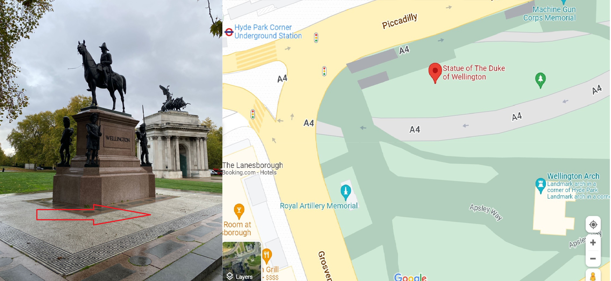

Hi There,
Your London 30+ Top Sights tour is booked!
We meet at the Statue of The Duke of Wellington

located at the corner of Hyde Park (London W1J 9DZ, United Kingdom) at 9:50 AM. Please don't be late :)
The nearest tube station is Hyde Park Corner Underground station. Please head to Exit 2, marked by The Battle of Waterloo Mural.
Please click this link Statue of Duke of Wellington - London Pass meeting point with a map for the meeting location. Please use a journey planner to ensure you leave enough time to get to the starting point.
The tour will commence at 10 AM. If you're behind schedule, it'll be hard for you to catch up!
A few friendly reminders:
1. We will be taking 1 tube ride so please bring along an Oyster card or a contactless bank card with at least £5 on it.
2. Bring comfy shoes
3. Bring an umbrella or good coat to withstand the beautiful English weather :)
4. Bring drinks and snacks
5. Bring a camera
We won’t be able to answer our phones once the tour has started it is essential that you arrive 10 minutes before the start and unfortunately, we will not be able to provide a refund due to lateness or delay.
Please contact us if you have any queries or questions. Our contact number is +447803 852499.
Thanks
Geoff
+971 54 236 6531
+44 7803 852 499